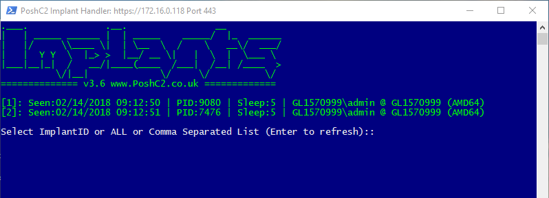

First Time Use¶
PoshC2 ships as a self-contained folder with the relevant components and subsequent shortcuts to start the server and implant-handler. The C2 server is the Powershell web server component, whereas the implant-handler is where you can interact with your implants.
Ensure you have all the relevant components and make sure Anti-Virus hasn’t quarantined any files before starting the server.
{kind=link}
C2 Server¶
To start the C2 Server run the link below, this will ask for elevation as it opens an HTTP or HTTPS port when the server starts.
Start-C2-Server.lnk
{kind=link}
Once the server opens, it will ask a series of questions that can either be left as default of changed depending on your risk appetite and your C2 setup.
[1] Enter the IP address or Hostname of the Posh C2 server (External address if using NAT) [IP]:
This input is the hostname or IP address that will be configured for the dropper, therefore you behind a firewall the default IP address that is prompted is probably incorrect. Ensure this is the internet facing hostname or IP that will be used for comms.
[2] Do you want to use HTTPS for implant comms? [Yes]:
By default, PoshC2 will configure the implant to use HTTPS but it can be used over plain text HTTP if required. All communications are encrypted within the HTTP content therefore comms are still secure even over HTTP. There is an added benefit to HTTPS, because unless the organisation is perform SSL inspection the communications cannot be checked.
[2a] Do you want PoshC2 to use default and permit self-signed SSL certificates [Yes]:
This option either allows self-signed certificates to be used or not. If this is configured, the implant will set this option before execution: [System.Net.ServicePointManager]::ServerCertificateValidationCallback = {$true}.
This also installs a default SSL certificate that ships with PoshC2 by using “Netsh.exe”. If you want to use your own certificate PoshC2 will provide the commands to install this manually.
[2b] Do you want to use domain fronting? [No]:
PoshC2 can now use domain fronting for comms. There is a caveat to this; the host must have .NET v4.0.30319 installed and usable to the PowerShell instance. However, if the host does not have this version of the CLR installed it will default back to the underlying CDN hostname, for example cloudfront.net or azureedge.net. The way we perform domain fronting in PoshC2 is by adding the Host header to the web requests.
This is a much stealthier option for comms as you can utilise hostnames with better reputation without needing to buy new domains and obtain reputation yourself. If you want to use domain fronting, then select Yes here and the next question appears.
[2c] Please specify the host header for domain fronting?
Enter the domain fronting header you want to use in PoshC2, e.g. flsiesfds.cloudfront.net
[3a] Do you want to customize the beacon URLs from the default? [No]:
If you want to customize the beacon URLs in PoshC2 you can do so here, this will auto generate your Apache Rewrite configuration as well. To do this type “Yes” and enter the URLs. These can be pasted in too, to finish the URL entry just enter a blank line and this will tell PoshC2 you have finished entering URLs. An example of URLs can be shown below:
v1/site/html/images.html
printer/navigate/n/2/2018/8/
cgi-bin/conf.pl
[3b] Do you want to customize the beacon URLs from the Socks Proxy (SharpSocks)? [No]:
If you want to customize the SharpSocks URLs in PoshC2 you can do so here, this will auto generate your Apache Rewrite configuration as well. To do this type “Yes” and enter the URLs. These can be pasted in too, to finish the URL entry just enter a blank line and this will tell PoshC2 you have finished entering URLs. An example of URLs can be shown below:
v2/site/html/images.html
sharp/navigate/n/2/2018/8/
p1/cgi-bin/conf.pl
[4a] Do you want to customize the default UserAgent? [No]:
PoshC2 will use the following UserAgent: Mozilla/5.0 (Windows NT 6.3; WOW64; Trident/7.0; Touch; rv:11.0) like Gecko
If you want to customize this option, type “Yes” and enter the UserAgent here:
Mozilla/6.0 (Windows NT 6.3; Trident/7.0; Touch; rv:11.0) like Gecko
[4b] Do you want to a referer header? [No]:
By default the referrer header is blank, however, if you prefer to have a referrer header in the comms type “Yes” and enter the referrer here:
https://www.google.co.uk?site=us
[5] Enter a new folder name for this project [PoshC2-2018-14-02-1456]:
This is the name of the folder that stores all information and payloads for the current project and database. This will default to a random time/date unless stated.
[6] Enter the default beacon time of the Posh C2 Server - 30s, 5m, 1h (10% jitter is always applied) [5s]:
Enter the default beacon time, this can be changed later by using the Implant-Handler. If you wish to change this you can enter a time in seconds (s), minutes (m), or hours (h).
[7] Enter the auto Kill Date of the implants in this format dd/MM/yyyy [28/02/2018]:
The Kill Date option is a safety net for both consultants performing Red Teaming and organisations being targeted. If persistence cannot be removed or the payloads are still active in emails or documents, the payload/dropper will not execute if the time has elapsed. The default is two weeks passed the start date but can be changed as long as the format is correct.
[8] Enter the HTTP port you want to use, 80/443 is highly preferable for proxying [443]:
Highly recommended that this option is left default, however, if you want to run the server on a separate port this is the place to do it. This will configure all payloads to that port.
[9] Do you want to enable sound? [Yes]:
This option will enable sound, when a new implant arrives it will tell you.
[10] Do you want to use Clockwork SMS for new payloads? [No]:
ClockworkSMS is a SMS service provider that can be used for sending texts. PoshC2 integrates this service to send a text message when a new implant arrives. This is an optional configuration, however, if you want to integrate this, then all you need to do is sign up and add an API key and Phone number to the initial setup.
This will then send you a text message when an implant arrives.
[11] Do you want all payloads or select limited payloads that shouldn’t be caught by AV? [Yes]:
If you are running PoshC2 on the inside or on a machine where Anti-Virus may be resident, you can cut down on the payloads generated by saying “No” to this option. This will generate the core payloads only, e.g. standalone executable, service executable and batch files.
Once this has been entered PoshC2 should start running and generating all payloads. Once this has done you’re all setup and ready to go.
Implant Handler¶
The implant-handler auto-starts when running the C2 server, however, in the new project folder there will be a shortcut..
{kind=link}
Team Viewer¶
The Team Viewer window is for when you are using a central server to host the C2 Server and would like more than one user to connect to the database and interact with clients. Usually the best way to achieve this is to map the project folder to a share and then pass this to the Team Viewer window when first opened.
Project Folder¶
Each project creates a unique folder to store all data and downloads specific to that engagement, including unique encryption keys. This means if you have shellcode pre-configured for one project, this will not connect to another project as the encryption keys will not match, so something to be aware of. This is an in-built safety measure to ensure someone else cannot just accept your connections from any PoshC2 dropper if they were able to replicate the backend for any reason.
QuickEdit Mode¶
In Powershell the option “QuickEdit” is on by default, however this comes with advantages and disadvantages to the end user. For example, if a user highlights the C2 Server window to copy and paste output it will automatically stop execution by default. This will in turn stop all hosts beaconing and therefore to defer a user from accidentally highlighting the server window untick the following setting on your Powershell default properties bar or run a simple registry change to disable this feature by default. It is worth noting you can still copy and paste the output by right-click and select “mark” similarly to how you would on a command prompt window:
Set-ItemProperty "HKCU:Console" QuickEdit 0

Clockwork SMS¶
ClockworkSMS is a SMS service provider that can be used for sending texts. PoshC2 integrates this service to send a text message when a new implant arrives. This is an optional configuration, however, if you want to integrate this then all you need to do is sign up and add an API key and Phone number to the initial setup.
This will then send you a text message when an implant arrives.
From: PoshC2
Message: NewImplant: Domain \ Username